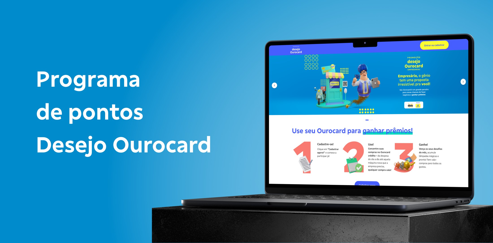
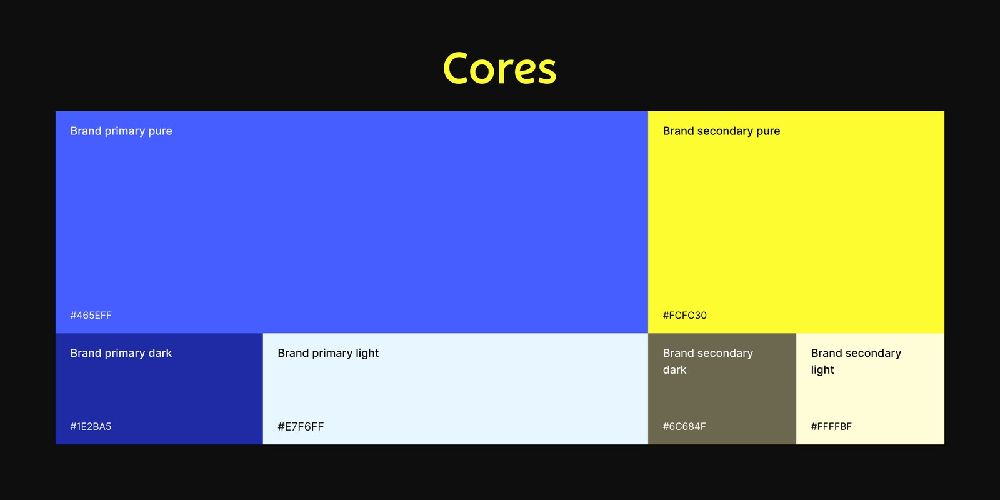
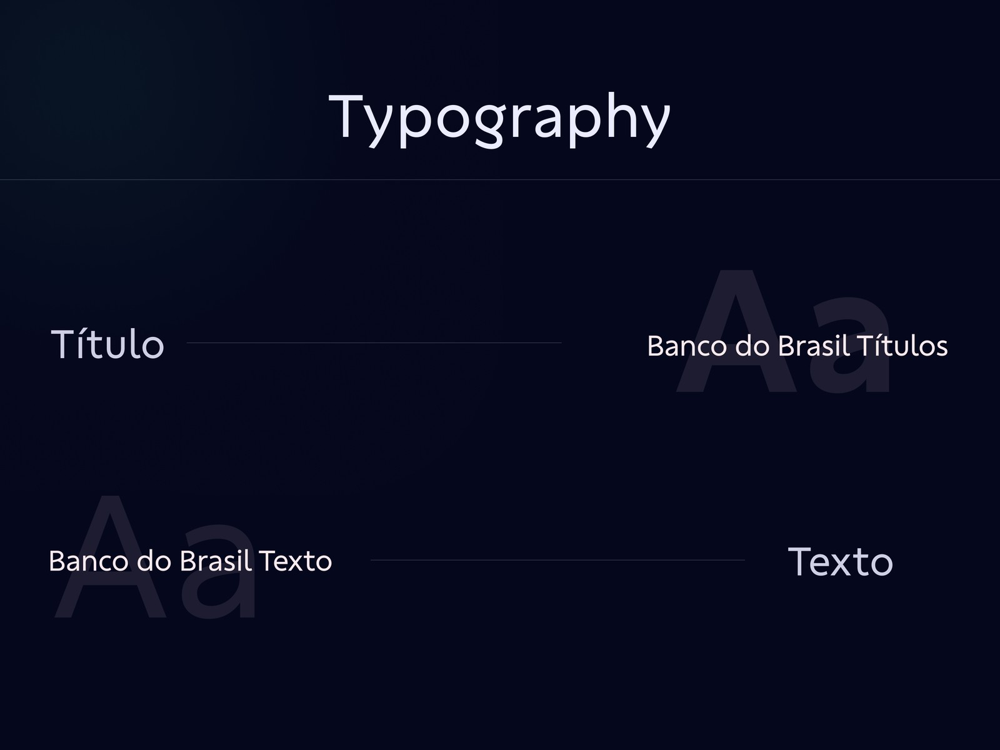
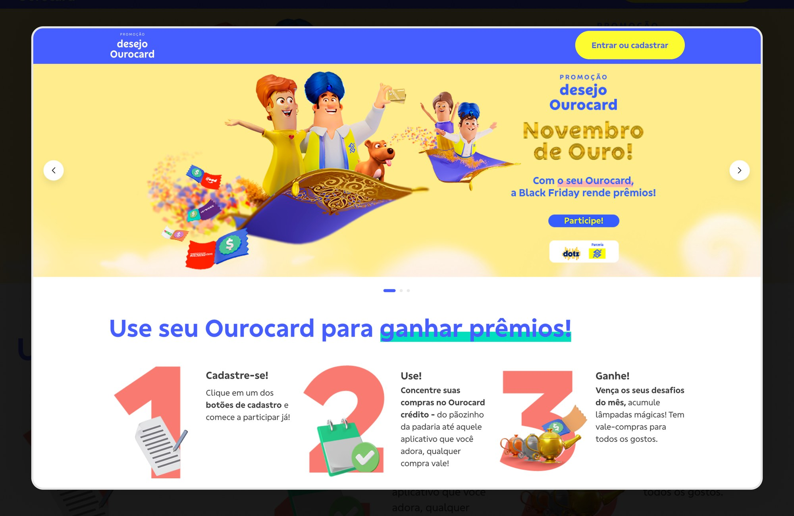
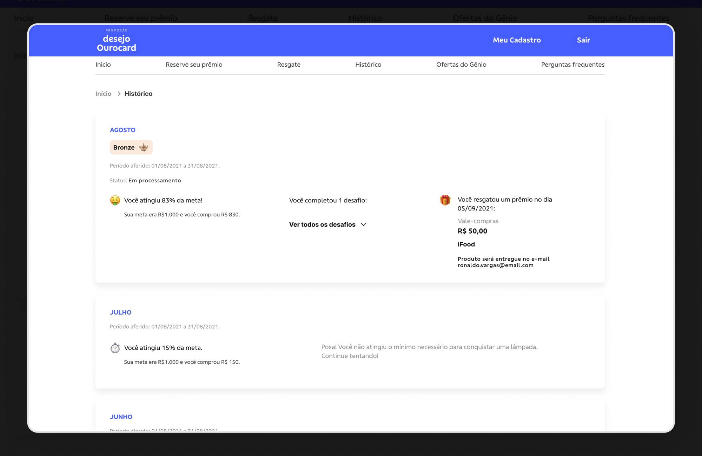
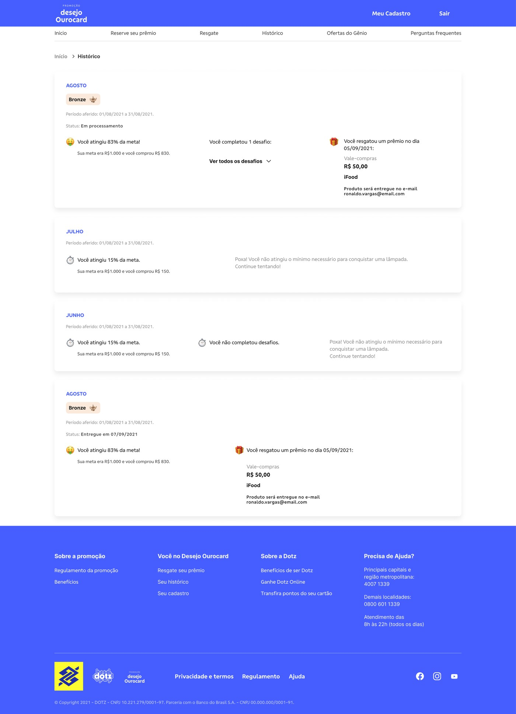
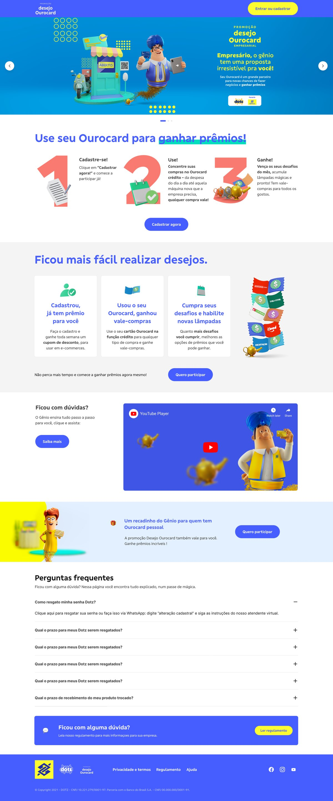

Discovery & Benchmark
Investigava o problema com stakeholders e analisava referências de mercado antes de desenhar qualquer solução.
Uma campanha sazonal de cashback da Dotz em parceria com o Banco do Brasil: usando o cartão de crédito Ourocard, o cliente acumula pontos, alcança categorias e troca por vouchers e vale-compras. Atuei no hotsite que conecta pontuação, metas e resgates em um só lugar.

O Desejo Ourocard é uma campanha de cashback criada pela Dotz em parceria com o Banco do Brasil. Ao usar o cartão de crédito Ourocard, pessoas físicas e jurídicas acumulam pontos e avançam por categorias — as lâmpadas de bronze, prata e ouro — que liberam a troca por vouchers e vale-compras. O cadastro é feito uma única vez: quem já participou entra automaticamente nas temporadas seguintes, sem recomeçar.
Entrei como Product Designer Sênior em uma squad multidisciplinar de dez pessoas. Meu trabalho cobria o escopo completo de cada problema ou melhoria — do entendimento à interface final. Investigava a fundo cada necessidade com dados e conversas reais, levantava hipóteses, prototipava, testava com usuários e acompanhava a entrega até o fim, garantindo fidelidade ao que foi desenhado.
Todo o trabalho foi desenhado dentro do DHARMA, o robusto design system da Dotz. Trabalhar sobre uma base madura de componentes e tokens deu consistência ao hotsite e velocidade ao time — o esforço ia menos para reinventar padrões e mais para resolver o problema certo do usuário em cada tela.


Investigava o problema com stakeholders e analisava referências de mercado antes de desenhar qualquer solução.
Cruzava mapas de calor do Hotjar com tickets de atendimento para entender onde o usuário travava de verdade.
Ouvia usuários e facilitava demandas, alinhando prioridades entre as áreas envolvidas.
Prototipava soluções para validar ideias rápido, antes de entrar em desenvolvimento.
Validava as soluções com usuários reais e ajustava o desenho a partir do que observava.
Documentava e acompanhava o desenvolvimento de perto, garantindo fidelidade ao design.

A porta de entrada explica em três passos como participar — cadastrar, usar o Ourocard e ganhar prêmios — com destaque para a temporada vigente. Atende tanto pessoa física quanto jurídica.

Mês a mês, o cliente acompanha o quanto atingiu da meta, qual lâmpada conquistou — bronze, prata ou ouro —, os desafios completados e os prêmios resgatados, com status de entrega de cada vale-compras.
No ar há mais de seis anos, o Desejo Ourocard se renova a cada temporada — sinal de uma parceria que se sustenta no tempo.
Ano após ano, a campanha alcança os resultados esperados pela parceria entre Dotz e Banco do Brasil.
Um hotsite que torna simples entender a pontuação, acompanhar metas e resgatar prêmios no tempo certo.

